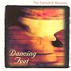

Celtic Lyrics Corner > Artists & Groups > Tannahill Weavers > Dancing Feet > Maggie Lauder
|  | Maggie Lauder |
| Credits : | Traditional; arranged by the Tannahill Weavers |
| Appears On : | Dancing Feet |
| Language : | Scots-English |
Lyrics :
Wha widnae be in love wie bonnie Maggie Lauder?
A piper met her gaun tae Fife and speired wit wis they ca'd her
Right dauntonly she answered him, "Begone, ye hallan shaker
Jog on yer gate, ye bletherskate, my name is Maggie Lauder"
"Meg," quo he, "And by my bags I'm fidgin' fain tae see ye
Sit doon by me, by bonnie bird, in troth I widnae steer ye
I am a piper tae my trade, my name is Rab the Ranter
The lassies loup gin they were daft when I blow up my chanter"
"Piper," quo Meg, "Hae ye yer bags or is yer drone in order?
If ye be Rab, I heard o' ye, live ye upon the border
The lassies aw baith far an' near hae heard o' Rab the Ranter
I'll shake ma fit wie richt good will gin ye'll blow up yer chanter"
Intae his bags he flew wie speed an' aboot the drones he twisted
Meg up an' walloped o'er the green, fur brawly could she frisk it
"Well done," quo he, "Play up," says she, "Well bobbed," says Rab the Ranter
"It's worth ma while tae play indeed when I haw sic' a dancer"
"Well hae ye played yer part," quo she, "Yer cheeks they are like crimson
There's nane in Scotland plays sae weel since we lost Habbie Simpson
I've lived in Fife baith maid and wife this ten years and a quarter
Gin ye should come tae Anster fair, speir ye fur Maggie Lauder"